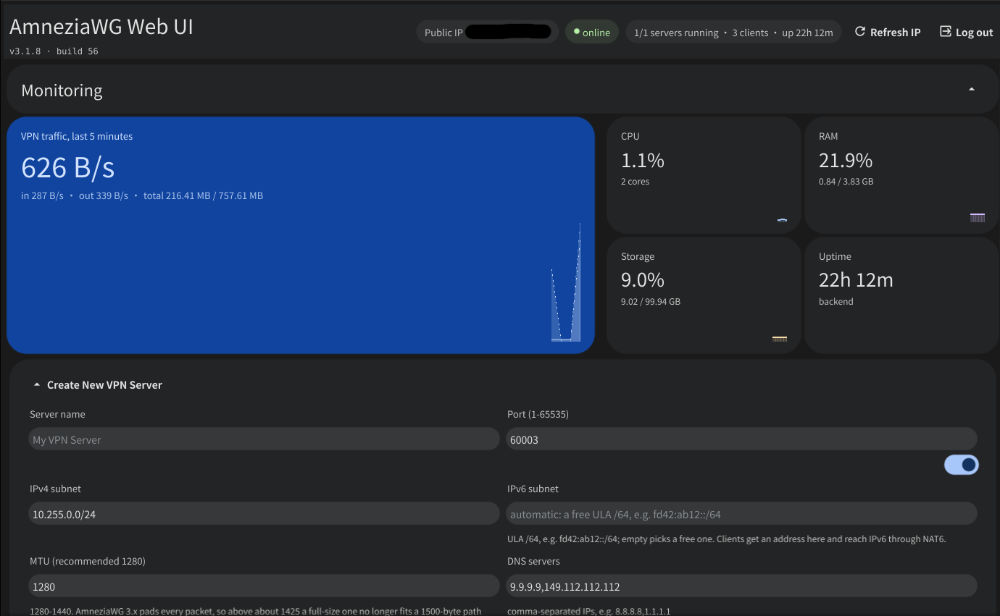

One container
One image of about 35 MB. There is no Node, nginx, supervisor or separate database to run next to it.
AmneziaWG Web UI is a web interface you run in Docker to set up and
manage an AmneziaWG VPN server. AmneziaWG is WireGuard with the traffic
disguised, so network filters do not recognise it as VPN traffic. The
panel creates servers and clients, hands out a .conf file, a
QR code or a vpn:// link, and shows traffic live. One image
of about 35 MB; no Node, nginx or database.

Servers, clients, exports and traffic for AmneziaWG, in one browser tab.
One image of about 35 MB. There is no Node, nginx, supervisor or separate database to run next to it.
The obfuscation is on for every server and has no switch: header protection, random trailers, disabled cookies, junk packets and padding are generated for you and copied into each client config.
Each server has its own port, address range, MTU, DNS and obfuscation settings. Edit them in the panel; they come back after a restart.
Add, edit, suspend or schedule clients. Each client can be exported as a .conf file, a QR code for mobile apps, or a vpn:// link for the AmneziaVPN app.
Traffic and handshake charts, the last endpoint of every client and the server status, refreshed automatically while the panel is open.
A login page sits in front of the panel and the API, with optional audit logging. Scripts can keep using curl -u.
Everything the UI does is an HTTP endpoint behind the same login, so provisioning and monitoring can be scripted instead of clicked.
The panel listens on both stacks, and every server also gets an IPv6 range. A client endpoint and its DNS list accept either family.
A Linux host with Docker and Docker Compose 2.24 or newer.
/dev/net/tun and NET_ADMIN. amneziawg-go runs in userspace, so there is no kernel module to load and no SYS_MODULE to grant.54845/tcp for the panel and one UDP port per server, 54844/udp by default.docker --version
docker compose version # needs v2.24 or newer
ls -l /dev/net/tun
State is a volume. Servers, client configs and web_config.json live in
/etc/amnezia. Back that volume up and the panel moves to another host as it is.
A Linux host with Docker and Compose. The panel ends up on port 54845.
The panel generates its admin password on the first start.
It prints it once, in docker compose logs app, and stores only
its argon2id hash. Copy it there — or set WEB_UI_PASSWORD to a
hash of your own.
Left alone, the panel generates one on the first start and prints it once. To choose your own, hash it with the image — the password comes from stdin, and the output is an argon2id hash, never the password.
printf '%s' 'your-password' | docker run --rm -i ghcr.io/noelbennettz/amneziawg-ui:latest api hash-passwordPut the hash from step 1 into WEB_UI_PASSWORD, writing every $ of it as $$ (or leave the line out and read the generated password from docker compose logs app). The addresses, ports and volume are the parameters you are most likely to change — binding the panel to 127.0.0.1 keeps it reachable only from the host, which is what a local TLS proxy needs. Every key is explained in DOCS.md, and the repository ships the same file fully commented as docker-compose.example.yml.
services:
app:
image: ghcr.io/noelbennettz/amneziawg-ui:latest
restart: unless-stopped
ports:
# Bind the panel to one address. Recommended: a TLS proxy on this host
# reaches 127.0.0.1, and the port stays closed to everything else.
# - "127.0.0.1:54845:54845/tcp"
- "54845:54845/tcp" # panel
- "54844:54844/udp" # first VPN server
environment:
WEB_UI_PORT: "54845"
WEB_UI_USER: "admin"
# optional: every $ of the hash written as $$
# WEB_UI_PASSWORD: "$$argon2id$$v=19$$m=19456,t=2,p=1$$$$"
volumes:
- data:/etc/amnezia
cap_add:
- NET_ADMIN
devices:
- /dev/net/tun
sysctls:
net.ipv4.ip_forward: "1"
net.ipv4.conf.all.src_valid_mark: "1"
net.ipv6.conf.all.disable_ipv6: "0"
net.ipv6.conf.all.forwarding: "1"
net.ipv6.conf.default.forwarding: "1"
volumes:
data: Then open http://your-server:54845/ with the user and password from step 1.
docker compose up -d
docker compose ps # expected: Up ... (healthy)
curl -s localhost:54845/status # expected: Container Uptime: 0d 0h 0m 3sIf the container restarts instead of staying up, docker compose logs app names the reason: a port already in use, or a host without /dev/net/tun.
After signing in, Create server → Add client produces the .conf, QR code and vpn:// link; a client that imports one shows a handshake time and traffic in the panel within seconds (the page polls every 5 seconds).
The panel serves HTTP. Put a TLS reverse proxy in front of it and set
WEB_UI_SECURE_COOKIE=true (or send X-Forwarded-Proto: https).
The panel and every tunnel are dual-stack. Whether clients get IPv6 internet depends on the Docker network.
0.0.0.0 and [::], and a client config accepts an IPv4 or IPv6 endpoint and DNS resolvers of either family.nat6.state reads ula-only.docker network create and mark it external; or run with host networking. nat6.state then reads ok.# Option 1: compose creates the network (named <project>_awg6)
services:
app:
networks: [awg6]
networks:
awg6:
enable_ipv6: true
ipam:
config:
- subnet: 2001:db8:1::/64
# Option 2: create it first, then reference it as external
# docker network create --ipv6 --subnet=2001:db8:1::/64 awg6
# networks:
# awg6:
# external: true# or give the default network a global prefix
networks:
default:
enable_ipv6: true
ipam:
config:
- subnet: 2001:db8:1::/64# or host networking
docker compose \
-f docker-compose.yml \
-f docker-compose.host.yml up -d
# and on the host, once:
sysctl -w net.ipv4.ip_forward=1 \
net.ipv6.conf.all.forwarding=1 \
net.ipv6.conf.default.forwarding=1The defaults are conservative; what has to change on a public host is short.
It is generated on the first start, printed once in the log and never stored in the clear: /etc/amnezia/admin.hash holds an argon2id hash only. Replace it with your own before the port is reachable from the internet — docker compose exec app api reset-password does it in place — and remember that the panel signs a 12-hour cookie and ends every session when the password changes.
The container is root inside its own network namespace, which is what creating the tunnel and writing iptables rules needs there. Outside that namespace it holds two grants only: NET_ADMIN and /dev/net/tun. It cannot load kernel modules (SYS_MODULE is not granted), and it sees the host's network only if you switch to host networking yourself.
Terminate TLS in Caddy, nginx or Traefik and set WEB_UI_SECURE_COOKIE=true. Turn on WEB_UI_AUDIT_LOG for one JSON line per login and change, with a retention window you choose.
Versions, ports and where the data lives.
54845/tcp panel, 54844/udp default VPN server/etc/amnezia volume/dev/net/tun, NET_ADMINThe questions that come up while installing and running it.
It is the same cryptography and speed with obfuscation added: junk packets, padding and altered headers keep network filters from recognising the protocol. AmneziaWG 3.0 added header protection; 3.1 adds random trailers and disables the cookie exchange. This panel turns all of that on by default.
The official AmneziaVPN 5.0.1.5 or newer on Windows, macOS, Linux, Android and iOS: paste the vpn:// link or scan the QR code. For older AmneziaWG clients, clear RandomTrailers and DisableCookies in the server form.
Compute a new value with printf 'your-password' | openssl dgst -binary -sha256 | base64, put it in WEB_UI_PASSWORD, and restart. Changing it ends all sessions at once.
The container serves HTTP. Put Caddy, nginx or Traefik in front for TLS, publish the port on the host loopback if the proxy is local, and set WEB_UI_SECURE_COOKIE=true or forward X-Forwarded-Proto: https.
By default a Docker bridge gives the container only a unique local address, so NAT6 can only translate to a ULA. Two fixes: put a global prefix on the compose network — enable_ipv6: true plus an ipam subnet from a prefix your provider routes to the host, with "ipv6": true and "ip6tables": true in the Docker daemon config — or run with docker-compose.host.yml. nat6.state in the API tells you which case you are in.
Update with docker compose pull then docker compose up -d; pin the dated tag instead of latest if you want upgrades to be a decision. To move, copy the /etc/amnezia volume to the new host and start the container there.
The image is published for amd64 and arm64, and the container itself is about 35 MB. The tunnel is userspace, so there is no kernel module to match against the host.
Self-hosting, forking and selling support are all fine. If you run a modified panel as a network service, its users must be able to get the source of the version you run — that is section 13.